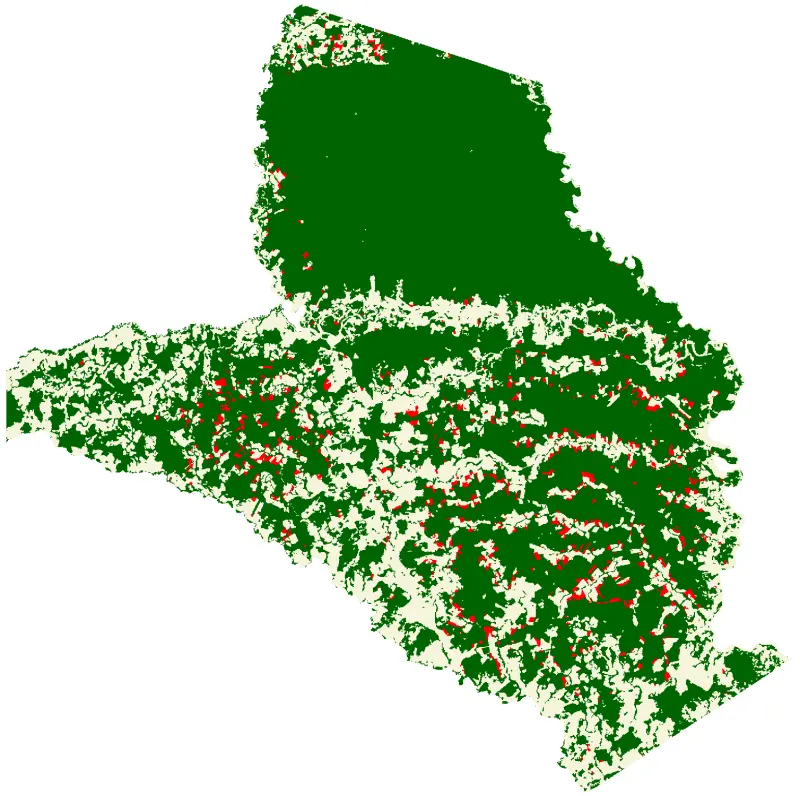

Installation and Example#
Installation#
ThRasE is available from the official QGIS Plugin Repository. To install it:
Open QGIS and go to
Plugins→Manage and Install Plugins….In the search bar, type
ThRasEand clickInstall Plugin.Once installed, activate the plugin via the
Pluginsmenu orPlugins toolbar.
Example#
{kind=link}
This example provides a sample dataset to demonstrate the capabilities of ThRasE. The data covers the Tinigua National Natural Park in Colombia, an area with a high rate of deforestation, and showcases forest land change between 2019 and 2020.
The thematic map includes the following classes:
Stable Forest (class 1)
Non-Stable Forest (class 5)
Deforestation (class 2)
The example also includes mean composite maps for each year as reference data.
Step 1: Download the demo#
Download the ThRasE Example ZIP file
Important
All files in this example are for demonstration purposes only and do not represent official data.
Step 2: Load the demo#
Unzip the file and load the ThRasE session file (.yaml) in the ThRasE initialization dialog.

Step 3: Build and explore the navigation#
Enable/disable the navigation tool (1) and open the navigation dialog (2). The demo has already built the navigation tiles using a user-defined area of interest (AOI). You can explore the navigation options with the different navigation types (3) and other settings.

Step 4: Layers and Edit tools#
You can show/hide the Layers and Edit tool toolbars. In the Layers toolbar (1) you can add or change an image layer to visualize in the multi-view panels. The Edit toolbar (2) is available in every view to edit the thematic map.

Note
Thematic map can be edited in any view, even if thematic map is not displayed in the view.
Step 5: Recode pixel table#
You can edit the thematic map with the Recode pixel table. The demo configuration (this is just an example and not an official configuration) shows a recode pixel table to change class 2 (Deforestation) to class 1 (Stable Forest) and class 5 (Non-Stable Forest) to class 2 (Deforestation). This means you can change multiple classes at once in a single operation.

Step 6: Editing - Apply the recode pixel table#
You can apply the recode pixel table with the editing tools based on your needs and in specific areas of the thematic map. First, optionally, you can disable or adjust the transparency of a layer that is covering the thematic map to better visualize the editing areas (1). Then, pick an editing tool (2) and start editing the thematic map (3). The functionality and options depend on the editing tool you choose (see the tooltips for controls). Each editing tool has its own undo and redo history, so you can edit safely and step back if something is not right.

You can see the entry and the number of pixels edited in the Registry widget and in the notification bar.

Step 7: Registry#
You can see the registry of the edits in the Registry widget. The registry is a list of the edits made to the thematic map. You can highlight the edited areas in the thematic map stored in the registry (1) and navigate through the edits with the slider (2). You can also export the registry to a vector file with all pixel modifications, including original and new pixel values, and timestamps (3).

Note
This example is just a basic demonstration of the capabilities of ThRasE. ThRasE has many more features and options to explore and use. Read the documentation to learn more about its full capabilities.